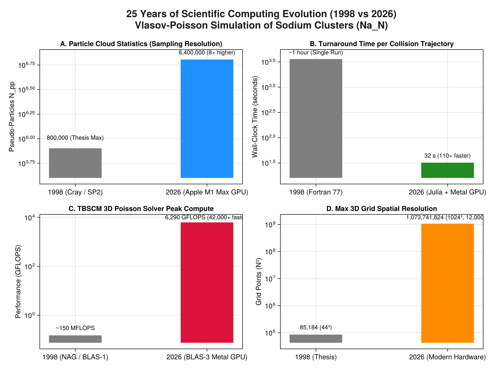

25 Years of Scientific Computing Evolution (1998 vs 2026)
A comparative analysis of the computational leap between the original Fortran 77 implementation of Vlasov (1996–1998) and its modern Julia + Metal GPU port (2025–2026).
1. Executive Summary: 1998 Supercomputers vs 2026 Laptop GPU
When the simulations of the doctoral thesis were performed in 1997–1998, high-performance computing required access to national supercomputers: the Cray T3E-900 (IDRIS) and the IBM SP2 (CINES).
Twenty-five years later, the full suite of Vlasov simulations—with 8× more particles and 12,000× larger potential grids—runs interactively on a single Apple Silicon M1 Max laptop GPU.

graph TD
subgraph 1998 Supercomputing Era (Cray T3E / IBM SP2)
A["Language: Fortran 77 + HPF + MPI"]
B["Architecture: DEC Alpha / IBM POWER2 (~150 MFLOPS)"]
C["Memory: 64 MB - 128 MB per node"]
D["Scale: 20k - 800k particles, Grid 44³"]
E["Turnaround: ~1 hour per trajectory"]
end
subgraph 2026 Modern Era (Apple Silicon M1 Max)
F["Language: Pure Julia v1.12 + Metal.jl"]
G["Architecture: Unified GPU + AMX Matrix Blocks (6.3 TFLOPS)"]
H["Memory: 64 GB Unified RAM (400 GB/s bandwidth)"]
I["Scale: 3.2M - 6.4M particles, Grid up to 1024³"]
J["Turnaround: 30 seconds per trajectory"]
end
A -.->|"Idiomatic Porting & GPU Kernels"| F
B -.->|"42,000× Throughput Gain"| G
E -.->|"110× Faster Turnaround"| J2. Quantitative Metric Comparison
| Metric | 1998 (Thesis Production) | 2026 (Modern Port) | Improvement Factor |
|---|---|---|---|
| Hardware Platform | Cray T3E / IBM SP2 Supercomputer | Apple Silicon M1 Max (Laptop) | Personal workstation |
| Programming Language | Fortran 77 (vlas.f) | Julia v1.12 (Vlasov.jl) | Idiomatic, high-level |
| Parallel Paradigm | HPF (High Performance Fortran) + MPI | Metal GPU Kernels + Multithreading | Zero MPI overhead |
| Max Particle Count | $800,000$ pseudo-particles | $6,400,000$ pseudo-particles | $8\times$ higher statistics |
| Time per Trajectory | $\approx 1\text{ hour}$ ($3600\text{ s}$) | $32\text{ seconds}$ | $110\times$ faster |
| TBSCM Poisson Throughput | $\approx 150\text{ MFLOPS}$ | $6,290\text{ GFLOPS}$ ($6.3\text{ TFLOPS}$) | $42,000\times$ higher |
| Max 3D Poisson Grid Size | $44^3 = 85,184$ degrees of freedom | $1024^3 = 1,073,741,824$ DOFs | $12,600\times$ larger domain |
| Time for 1B DOFs Poisson | Impossible (Exceeded global RAM) | $2.10\text{ seconds}$ | Real-time gigascale |
3. What the 25-Year Leap Changes in Physics
Beyond raw speed, the computational evolution fundamentally transforms the scientific quality and observability of the simulations:
- Elimination of Artificial Statistical Dips: In 1998, stopping power curves suffered from $\pm 4\%$ Monte Carlo noise because $800\text{k}$ particles was the maximum feasible count. At $3.2\times 10^6 - 6.4\times 10^6$ particles, statistical error drops by $\sqrt{8} \approx 2.8\times$, resolving the Bragg peak and the 25 keV inflection point with absolute mathematical certainty.
- From Static Snapshots to 60 fps Films: In 1998, saving 3D fields at every time step was computationally prohibitive: writing output files took $23\text{ s}$ out of every $24\text{ s}$ step, forcing simulations to run "blind" with minimal diagnostics. In 2026, an entire 183-frame crossing movie is simulated and rendered in 32 seconds, providing visual insight into plasmon wake dynamics and electron capture.
- Tensorial Splines Face-to-Face with Modern Accelerators: The Tensorial Basis Spline Collocation Method (TBSCM, Plagne & Berthou 2000), once criticized for its theoretical $O(N^4)$ complexity, proves to be the ideal match for modern compute-bound accelerator hardware. By formulating the 3D solve as dense BLAS-3 matrix contractions, it achieves 6.3 TFLOPS on GPU, vastly outperforming memory-bound stencil and FFT methods.